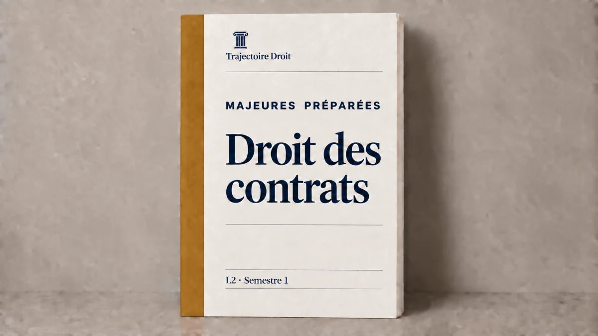
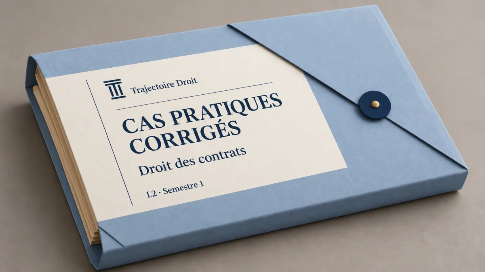
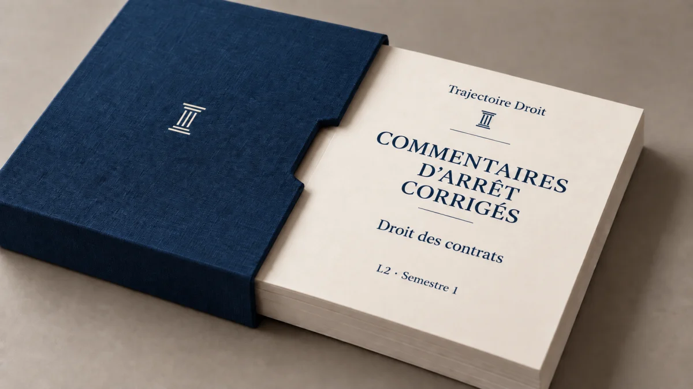

L'arrêt Poussin expliqué simplement
En 1968, un tableau est vendu 2 200 francs, puis confié la même année au Louvre comme un authentique Nicolas Poussin. Cette vente a occupé les tribunaux pendant près de dix-neuf ans, jusqu'à la confirmation définitive de la nullité en 1987. L'arrêt du 22 février 1978, rendu dix ans après la vente, a surtout changé la définition de l'erreur en droit des contrats.


Droit des contrats L2 S1
Réviser toute la matière de cet arrêt avant les partiels
Les majeures préparées réunissent les règles du semestre, déjà rédigées condition par condition comme au début d'un cas pratique. La fiche complète reprend tout le cours du semestre, avec les grands arrêts expliqués et ce qu'ils changent pour la règle. Ce sont les deux supports que les étudiants achètent le plus sur le site.
Le vendeur qui se trompe sur son propre tableau
L’arrêt Poussin a été rendu le 22 février 1978 par la première chambre civile de la Cour de cassation. Les vendeurs demandent l’annulation de la vente, car ils affirment avoir vendu dans la conviction que le tableau ne pouvait pas être de Nicolas Poussin. La Cour impose de rechercher si cette conviction avait faussé leur consentement, même si l’auteur du tableau reste incertain. Casser un arrêt, c’est annuler la décision attaquée. La Cour casse donc l’arrêt qui rejetait leur demande, et renvoie l’affaire devant une autre cour d’appel.
Cette solution change deux habitudes du droit de l'erreur, c'est pourquoi on l'étudie encore presque cinquante ans après. D'abord, elle admet qu'un vendeur puisse se tromper sur ce qu'il vend lui-même. Jusque-là, les juges pensaient surtout à l'acheteur trompé sur ce qu'il reçoit.
Ensuite, elle impose de rechercher la conviction des vendeurs alors que l’attribution à Nicolas Poussin reste discutée. Le juge regarde donc ce que croyait le vendeur au moment de signer, plus que la vérité sur l'auteur du tableau.
L'authenticité d'un tableau, c'est le fait qu'il soit bien de la main du peintre. Il faut retenir trois idées de l'arrêt Poussin. D'abord, l'authenticité d'un tableau est une qualité substantielle. Une qualité substantielle est si importante qu'elle a décidé la personne à conclure le contrat, même si elle ne se voit pas. Une erreur sur cette qualité peut donc suffire à annuler la vente. Ensuite, l'erreur peut porter sur la prestation du vendeur lui-même, en plus de celle que reçoit l'acheteur. Enfin, le juge apprécie cette erreur à partir de ce que croyait le vendeur au jour de la vente, sans attendre une vérité définitive que personne ne connaîtra peut-être jamais.
Le tableau, présenté comme une œuvre de l'école des Carrache, est adjugé 2 200 francs à l'Hôtel Drouot. La Réunion des musées nationaux exerce aussitôt son droit de préemption.
La cour d'appel de Paris rejette la nullité le 2 février 1976. La Cour de cassation casse cette décision le 22 février 1978 et renvoie l'affaire devant une autre cour d'appel.
Le 1er février 1982, la cour d'appel d'Amiens rejette de nouveau la nullité, en refusant de tenir compte des éléments postérieurs à la vente. La Cour de cassation casse cet arrêt le 13 décembre 1983, dans l'arrêt qu'on appelle Poussin II.
La cour d'appel de Versailles confirme définitivement la nullité de la vente, près de dix-neuf ans après qu'elle a été conclue.
Les faits, un Poussin vendu comme une œuvre d'école
Les époux Saint-Arroman possèdent un tableau que leur tradition familiale attribue à Nicolas Poussin, l'un des plus grands peintres français du dix-septième siècle. Ils décident de le vendre aux enchères publiques. Pour cela, ils confient la vente à trois commissaires-priseurs, Maurice et Philippe Rheims ainsi que René-Georges Laurin. Les commissaires-priseurs étaient alors des officiers publics chargés d'organiser les ventes aux enchères. Le mandat est le contrat par lequel le vendeur charge un professionnel d'agir en son nom. Entre les époux et les commissaires-priseurs existe donc un mandat.
Les commissaires-priseurs montrent la toile à leur expert, Robert Lebel. Une œuvre de l'école des Carrache a été peinte par un artiste anonyme dans le style d'une famille de peintres italiens de la fin du seizième siècle. Selon l'expert, l'œuvre appartient à l'école des Carrache. Or une œuvre d'école se vend beaucoup moins cher qu'une œuvre du maître lui-même. Les époux acceptent pourtant cette attribution, et le tableau est inscrit comme tel au catalogue de la vente, avec leur accord. Ils sont donc convaincus, au moment de vendre, que leur tableau n'est pas un Poussin.
L'Hôtel Drouot est la grande salle des ventes parisienne. Le 21 février 1968, le tableau y est adjugé pour 2 200 francs à la personne qui a fait l'offre la plus haute. La Réunion des musées nationaux est l'établissement public qui achète les œuvres pour les musées de l'État. Aussitôt, elle exerce son droit de préemption. Ce droit lui permet de prendre la place de l'acheteur qui a remporté les enchères, au même prix. La Réunion des musées nationaux devient ainsi l'acheteuse du tableau, et c'est avec elle que les époux sont liés par le contrat de vente.
Un mois plus tard, un arrêté du 20 mars 1968 affecte le tableau au musée du Louvre comme une œuvre de Nicolas Poussin. En 1969, le conservateur Pierre Rosenberg publie dans la Revue du Louvre un article qui présente la toile comme un Poussin authentique, aujourd'hui connue sous le titre Olympos et Marsyas. Le musée l'expose ensuite sous le nom du peintre. Les époux Saint-Arroman comprennent alors qu'ils ont peut-être vendu un Poussin au prix d'une œuvre d'école. Ils demandent donc l'annulation de la vente pour erreur sur une qualité substantielle de la chose vendue, sur le fondement de l'ancien article 1110 C. civ. Ils mettent aussi en cause la responsabilité des commissaires-priseurs et de l'expert, dont l'avis les a conduits à vendre.
La procédure, de la nullité à la cassation de 1978
Les juristes connaissent bien cette affaire, en partie à cause de sa durée, et l'arrêt du 22 février 1978 n'en est qu'une étape.
Le 13 décembre 1972, le tribunal de grande instance de Paris donne raison aux époux Saint-Arroman et prononce la nullité de la vente. La Réunion des musées nationaux fait appel. Comme elle est un organisme public, une question de compétence se pose, puisqu'il faut savoir quel juge doit trancher, le juge judiciaire ou le juge administratif. Le Tribunal des conflits est la juridiction chargée de répartir les affaires entre les deux ordres de juges. Le 2 juin 1975, il retient la compétence du juge judiciaire, car le litige porte sur une vente de droit privé.
Le 2 février 1976, la cour d'appel de Paris donne tort aux époux et rejette la demande de nullité. Son raisonnement est le suivant. Pour annuler une vente pour erreur, il faut prouver que la réalité était différente de ce que croyait le vendeur. Or il n'est pas prouvé que le tableau soit une œuvre authentique de Poussin, donc l'erreur invoquée par les époux n'est pas établie. Autrement dit, la cour d'appel exige d'abord une certitude sur l'auteur du tableau avant d'examiner ce que croyaient les vendeurs.
Les époux Saint-Arroman forment alors un pourvoi en cassation, pour demander à la Cour de cassation de vérifier si le droit a été correctement appliqué, sans rejuger les faits. Le 22 février 1978, la première chambre civile casse l'arrêt de Paris « en son entier » et renvoie l'affaire devant la cour d'appel d'Amiens.
Les arguments des parties, la conviction du vendeur ou la vérité sur l'auteur
Un moyen est un argument juridique contre l'arrêt d'appel. Le pourvoi des époux Saint-Arroman comporte deux moyens. L'arrêt publié n'en reproduit pas le texte, et la Cour examine seulement le moyen fondé sur l'ancien article 1110 C. civ., puis elle juge inutile de statuer sur l'autre. On connaît donc la thèse des vendeurs par leur demande et par la réponse de la Cour, sans en avoir les mots exacts.
Pour les époux, l'erreur se mesure à ce qu'ils croyaient au jour de la vente. Ils étaient convaincus, sur la foi de l'expert, de vendre une œuvre d'école qui ne pouvait pas être de Poussin. Or l'auteur d'un tableau est une qualité substantielle. Ils n'auraient donc pas vendu à ce prix s'ils avaient su que le tableau pouvait être de Poussin. Leur consentement a donc été vicié, autrement dit faussé, par cette conviction. Il importe peu, selon eux, que l'authenticité du tableau reste discutée, puisqu'ils ont vendu en excluant à tort une possibilité réelle.
La Réunion des musées nationaux a obtenu gain de cause devant la cour d'appel, et l'arrêt attaqué expose le raisonnement qui lui donne raison. Ce raisonnement s'attache à la vérité de l'attribution. Tant que personne ne prouve que le tableau est de Poussin, rien ne permet de dire que les vendeurs se sont trompés, puisqu'ils ont peut-être vendu exactement ce qu'ils croyaient vendre. Plus tard dans le procès, la Réunion des musées nationaux soutiendra d'ailleurs, d'après l'arrêt Poussin II du 13 décembre 1983, qu'il n'existe finalement « pas de certitude absolue sur l'origine de l'oeuvre », malgré son propre comportement après l'achat. Elle avait pourtant confié le tableau au Louvre sous le nom de Poussin.
Le problème de droit
Un vendeur, convaincu au jour de la vente que son tableau n'est pas de Poussin, peut-il invoquer une erreur sur une qualité substantielle, alors même que personne, ni lui ni la cour, ne peut établir avec certitude si le tableau est ou non authentique ?
La cour d'appel de Paris exigeait d'abord une certitude sur l'authenticité. Elle refusait donc l'erreur dans les ventes d'œuvres dont l'auteur reste douteux. Le résultat est paradoxal, car le vendeur a justement le plus besoin de protection dans ces ventes.
La Cour de cassation doit donc choisir entre deux solutions. Elle peut exiger d'abord la preuve de l'auteur réel du tableau. Elle peut aussi protéger le vendeur à partir de ce qu'il croyait au moment de vendre, même si le doute sur l'auteur ne se lève jamais.
La solution de la Cour de cassation
Le 22 février 1978, la Cour de cassation casse l'arrêt de la cour d'appel de Paris.
Elle s'appuie sur l'ancien article 1110 C. civ., qui faisait de l'erreur sur la substance de la chose une cause de nullité. Elle cite ce texte en tête de sa décision. On dit qu'elle statue « au visa » de ce texte. Sa formule reste aujourd'hui la référence sur ce point.
L'attendu de principe
« Qu'en statuant ainsi, sans rechercher si, au moment de la vente, le consentement des vendeurs n'avait pas été vicié par leur conviction erronée que le tableau ne pouvait pas être une œuvre de Nicolas Poussin, la cour d'appel n'a pas donné de base légale à sa décision. »Cour de cassation, 1re chambre civile, 22 février 1978, n° 76-11.551, affaire du Poussin
Cette phrase reproche à la cour d'appel de « ne pas avoir donné de base légale à sa décision », faute d'avoir vérifié un fait nécessaire pour appliquer correctement la loi. Ici, la cour d'appel aurait dû vérifier ce que croyaient les vendeurs au jour de la vente.
La Cour de cassation laisse de côté la question de l'authenticité du tableau. En effet, la conviction des vendeurs peut se prouver sans savoir si le tableau est de Poussin.
Les vendeurs pensaient céder une œuvre d'école, sur la foi d'une expertise sérieuse. Si cette conviction était fausse, alors leur consentement a pu être vicié, quelle que soit la vérité définitive sur l'auteur du tableau.
L'affaire est renvoyée devant la cour d'appel d'Amiens, qui doit reprendre l'examen des faits en tenant compte de cette règle.

Majeures préparées
Droit des contrats L2 S1
Pourquoi cet arrêt a-t-il changé le droit de l'erreur ?
L'arrêt change deux règles que les juristes tenaient jusque-là pour acquises. La première concerne le sens du mot « substance ». La seconde concerne la personne qui peut se tromper, le vendeur ou l'acheteur.
Pothier, un juriste du dix-huitième siècle dont s'inspire largement le Code civil de 1804, concevait la substance de façon matérielle, comme la matière physique dont une chose est faite. Par exemple, celui qui vend du cuivre en croyant vendre de l'or se trompe sur la substance au sens classique.
Un tableau de Poussin et un tableau de l'école des Carrache sont pourtant faits des mêmes matériaux, une toile recouverte de peinture. La paternité artistique, c'est l'identité du peintre. Entre les deux, seule la paternité artistique change. Cette qualité ne se voit pas, et seule une expertise peut l'établir.
La Cour de cassation juge que cette qualité immatérielle, qui ne se touche pas, relève de la substance. Elle étend ainsi la notion bien au-delà de la matière physique, parce que l'authenticité détermine la valeur d'une œuvre d'art et sa rareté sur le marché.
Le second changement concerne la personne qui se trompe. D'ordinaire, on pensait à l'acheteur qui se trompe sur ce qu'il reçoit. Ici, au contraire, les vendeurs invoquent une erreur sur leur propre prestation, car ils affirment qu’ils croyaient que le tableau ne pouvait pas être de Poussin. Le texte de l'ancien article 1110 C. civ. ne distinguait pas entre les parties, et il permettait donc déjà ce cas. Les juges l'admettaient pourtant rarement avant 1978.
Il faut aussi distinguer Poussin d'un autre grand arrêt du même chapitre, l'arrêt Baldus. Dans les deux affaires, le vendeur a cédé son bien très en dessous de sa valeur réelle.
L'erreur sur la valeur consiste à se tromper sur le prix d'un bien dont on connaît les qualités. Or l'article 1136 C. civ. écarte en principe l'erreur sur la seule valeur d'une chose, qui ne permet donc pas d'annuler la vente.
Dans l'affaire Poussin, l'écart de valeur vient pourtant d'une erreur sur une qualité du tableau, à savoir son auteur. L'annulation repose donc sur cette qualité, et la différence de prix en découle seulement.
La Cour de cassation retient ainsi un critère subjectif, fondé sur la conviction du contractant au jour du contrat. Un critère objectif, fondé sur la vérité de l'attribution, serait en effet impossible à établir dans la quasi-totalité des litiges sur l'authenticité d'une œuvre d'art.
La portée, jusqu'au Code civil actuel
L'affaire se poursuit bien après la cassation de 1978, et les décisions suivantes complètent la règle posée par l'arrêt.
Sur renvoi, la cour d'appel d'Amiens rejette de nouveau la nullité le 1er février 1982. Elle admet pourtant que les époux étaient convaincus, au moment de la vente, que le tableau ne pouvait pas être un Poussin. Son motif porte cette fois sur la preuve. En effet, elle écarte l'affectation du tableau au Louvre en 1968, l'article de la Revue du Louvre de 1969 et l'exposition de l'œuvre sous le nom de Poussin, parce que ces éléments sont postérieurs à la vente. Selon elle, ils ne pouvaient pas avoir influencé le consentement des vendeurs au jour du contrat.
La Cour de cassation censure pourtant ce raisonnement le 13 décembre 1983, dans un arrêt connu sous le nom de Poussin II et rendu sur le pourvoi n° 82-12.237. Elle juge que des éléments postérieurs à la vente peuvent servir de preuve d'une erreur qui existait déjà au jour du contrat.
Il faut donc distinguer deux moments. L'erreur s'apprécie toujours au jour de la vente, mais elle peut se prouver avec des éléments découverts plus tard.
Neuf ans après l'arrêt de 1978, l'arrêt Fragonard, rendu par la première chambre civile le 24 mars 1987 sur le pourvoi n° 85-15.736, fixe la limite de la solution Poussin.
Dans cette affaire, un tableau attribué à Fragonard, « Le Verrou », avait été vendu en 1933. Les deux parties savaient alors que son authenticité restait incertaine, et elles avaient accepté ce doute.
La Cour de cassation refuse cette fois la nullité, car les parties avaient accepté, dès la vente, l'incertitude sur l'auteur du tableau. Ainsi, une conviction erronée sur une qualité essentielle permet d'invoquer l'erreur. En revanche, un doute accepté en connaissance de cause par les deux parties l'exclut, même quand la vérité apparaît ensuite.
L'affaire se termine enfin le 7 janvier 1987, quand la cour d'appel de Versailles confirme définitivement la nullité de la vente. Le tableau est restitué aux époux Saint-Arroman, qui remboursent en retour les 2 200 francs perçus près de dix-neuf ans plus tôt.
L'œuvre a ensuite été exposée un temps chez un marchand genevois, puis dans une galerie parisienne.
La réforme du droit des contrats de 2016 a repris ces solutions dans les nouveaux articles du Code civil sur l'erreur. L'article 1132 C. civ. remplace la notion de substance par celle de qualités essentielles de la prestation. Cette formule couvre aussi bien les qualités matérielles que les qualités immatérielles, comme Poussin l'avait déjà admis en 1978.
L'article 1133 alinéa 2 précise que l'erreur peut porter sur la prestation « de l'une ou de l'autre partie », donc du vendeur comme de l'acheteur. Le texte inscrit ainsi dans le Code civil la situation de l'affaire Poussin.
Enfin, l'article 1133 alinéa 3 C. civ. exclut l'erreur relative à une qualité sur laquelle les parties ont accepté un doute, ce que le texte appelle un aléa. Il reprend ainsi la solution Fragonard.
La jurisprudence continue d'appliquer ces principes bien après la réforme. Une erreur excusable est celle que le contractant ne pouvait pas raisonnablement éviter. Un arrêt de la première chambre civile du 4 décembre 2024, rendu sur le pourvoi n° 23-17.569, a précisé les conditions de l'erreur excusable du vendeur. L'affaire concernait la vente aux enchères d'un tableau lié au peintre Géricault, estimé 200 à 300 euros, puis adjugé 50 000 euros et revendu 130 000 euros en douze jours.
La Cour y juge que l'erreur du vendeur reste excusable lorsqu'il a transmis toutes les informations en sa possession au professionnel chargé de la vente et que ce professionnel a manqué à son devoir de recherche.
Cet arrêt applique encore l'ancien article 1110 C. civ., car la vente datait de 2015. Les articles 1132 et 1133 s'appliquent en effet seulement aux contrats conclus depuis le 1er octobre 2016. Une vente plus ancienne reste jugée sur l'ancien texte, avec les principes posés par l'arrêt Poussin.
Quarante-six ans plus tard, le principe posé par Poussin sert donc toujours à trancher les litiges sur l'authenticité des œuvres d'art.
Ce que les auteurs approuvent et critiquent
La solution de 1978 a divisé les auteurs. Certains approuvent la protection qu'elle donne au vendeur, tandis que d'autres craignent qu'elle rende les ventes moins sûres.
Jacques Ghestin a consacré à ce sujet une étude intitulée « L'authenticité, l'erreur et le doute », publiée en 2001 chez Litec dans les Études offertes à Pierre Catala, Le droit privé français à la fin du XXe siècle, à la page 457. Il y montre que la conception matérielle et objective de la substance, héritée de Pothier, reste trop étroite pour le marché de l'art, où une qualité invisible fait justement la valeur.
Dans sa note publiée au Recueil Dalloz de 1978, à la page 601, Paul Malinvaud a salué cette lecture subjective comme la seule qui rende l'erreur réellement utilisable en matière d'œuvres d'art. De son côté, Jean-Luc Aubert, dans son commentaire de Poussin II publié au Recueil Dalloz de 1984, à la page 340, estime que la preuve par tout moyen, y compris par des éléments postérieurs à la vente, prolonge logiquement la première décision.
La critique la plus construite vient de Stéphanie Lequette-de Kervenoaël, dans sa thèse consacrée à l'authenticité des œuvres d'art, publiée chez LGDJ en 2006 avec une préface de Jacques Ghestin. Elle reconnaît que le choix d'un critère subjectif protège efficacement un vendeur profane, non spécialiste, face à un acquéreur mieux informé.
Elle relève cependant que les experts craignent un procès en cas d'erreur d'attribution. Ils multiplient donc des formules prudentes du type « attribué à » plutôt que de trancher clairement l'authenticité d'une œuvre.
À terme, cette prudence réduit l'information disponible sur le marché de l'art, alors que la règle devait justement mieux protéger les contractants.
En 1978, la Cour de cassation a donc choisi de protéger le contractant qui se trompe de bonne foi, même si les ventes d'œuvres dont l'auteur est incertain deviennent un peu moins sûres, et la réforme de 2016 a confirmé ce choix.
Comment utiliser l'arrêt Poussin dans une copie
Dans un cas pratique
Poussin sert dès qu'un énoncé met en scène une personne qui vend un objet ancien, par exemple un meuble ou une œuvre d'art, sur la foi d'une attribution ou d'une estimation qui se révèle ensuite fausse. Le corrigé annonce d'abord la problématique. La majeure énonce ensuite les conditions de l'erreur, et la mineure les vérifie une à une sur les faits. Un énoncé type permet de suivre cette démarche en entier.
Les faits. Honorine hérite de sa grand-mère d'un tableau de paysage ancien. Elle est infirmière et n'a jamais acheté ni vendu d'œuvre d'art. En mars 2026, elle confie le tableau à une salle des ventes. L'expert de la vente l'attribue à « l'école de Claude Lorrain », un grand peintre du dix-septième siècle, et le catalogue reprend cette attribution. Honorine croit donc que le tableau n'est pas de Claude Lorrain lui-même. Il est ensuite adjugé 1 800 euros à un collectionneur. Un mois plus tard, une expertise commandée par ce collectionneur attribue pourtant le tableau à Claude Lorrain en personne, alors que d'autres spécialistes en doutent encore. Honorine demande l'annulation de la vente.
Problématique. Un vendeur qui a cédé aux enchères un tableau en étant convaincu qu'il n'était pas de la main d'un grand peintre peut-il obtenir la nullité de la vente pour erreur, alors que cette attribution reste discutée même après la vente ?
Majeure. L'art. 1132 C. civ. permet de demander la nullité relative du contrat lorsque l'erreur porte sur une qualité essentielle de la prestation. Cette prestation désigne, par exemple, ce qu'une partie fournit à l'autre, comme le tableau vendu ou le travail promis. De plus, l'erreur peut porter sur un fait ou sur une règle de droit. Les cinq conditions suivantes doivent être réunies.
- Une discordance entre la croyance et la réalité. Au moment de conclure le contrat, ce que le contractant croyait doit ne pas correspondre à la réalité. La victime doit expliquer sur quel fait ou sur quelle règle de droit elle s'est trompée. La croyance de l'errans (la personne qui s'est trompée) s'apprécie au jour de la conclusion du contrat, mais la réalité à laquelle on la confronte peut être établie par des éléments découverts après la vente, par exemple une expertise réalisée une fois le tableau vendu. La première chambre civile de la Cour de cassation l'a jugé le 13 décembre 1983, dans le second arrêt Poussin.
- Une qualité essentielle. L'art. 1133, al. 1er, C. civ. définit les qualités essentielles comme celles que les parties ont expressément ou tacitement convenues et en considération desquelles elles ont contracté. Une qualité qui compte beaucoup pour une seule personne ne suffit donc pas. Il faut en effet montrer que cette qualité appartient à l'accord des deux parties. Par exemple, l'acte de vente présente le tableau comme une œuvre d'un peintre déterminé. L'auteur du tableau devient ainsi une qualité convenue. L'art. 1133, al. 2, C. civ. permet l'erreur sur ce que l'on reçoit, mais aussi sur ce que l'on fournit. Un vendeur peut donc se tromper sur la qualité de son propre bien. Dans son arrêt du 22 février 1978, la première chambre civile de la Cour de cassation a reproché aux juges de la cour d'appel de ne pas avoir recherché si des vendeurs avaient conclu la vente dans la conviction erronée que leur tableau ne pouvait pas être de Poussin. Elle a donc cassé l'arrêt de la cour d'appel pour que la cour de renvoi examine cette croyance, et la nullité restait à apprécier par les juges du fond, au regard des conditions de l'erreur.
- Une erreur déterminante du consentement. C'est la condition commune à tous les vices (art. 1130 C. civ.). La victime doit en effet établir qu'elle aurait refusé de conclure le contrat si elle avait connu la réalité. Elle peut aussi montrer qu'elle aurait accepté des conditions substantiellement différentes. Le juge tient donc compte de sa personne et des circonstances de la conclusion.
- Une erreur excusable. L'art. 1132 écarte l'erreur inexcusable, c'est-à-dire l'erreur grossière qu'une personne normalement diligente n'aurait pas commise. Le juge examine les connaissances de la personne et les vérifications qu'elle pouvait raisonnablement faire. Cette appréciation se fait in concreto, selon sa situation. Une erreur difficile à éviter pour un acheteur débutant peut ainsi être inexcusable pour un spécialiste. Les vendeurs de l'affaire Poussin étaient des profanes qui s'appuyaient sur l'expertise de la vente, et leur erreur restait excusable.
- Une absence d'aléa accepté. Dernière condition, il faut qu'aucune des parties n'ait accepté de courir un risque sur la qualité en cause. En effet, selon l'art. 1133, al. 3, C. civ., l'acceptation d'un aléa sur une qualité de la prestation exclut l'erreur relative à cette qualité. Celui qui a conclu en sachant que la qualité était incertaine ne peut donc plus invoquer l'erreur une fois l'incertitude levée. Dans l'arrêt du Verrou de Fragonard du 24 mars 1987, la première chambre civile de la Cour de cassation a rejeté le pourvoi des héritiers d'un vendeur, qui demandaient l'annulation de la vente d'un tableau présenté comme « attribué à » Fragonard, parce que les deux contractants avaient accepté de conclure la vente malgré l'incertitude sur l'auteur du tableau.
Le juge apprécie donc l'erreur à partir de ce que croyait le contractant au jour de la vente. Il suffit que le vendeur ait exclu à tort que le tableau puisse être de la main d'un maître, même si son authenticité n'est pas établie avec certitude. Cette conviction doit toutefois reposer sur des éléments objectifs, comme une expertise ou une mention de l'acte de vente.
Mineure. En l'espèce, la discordance entre la croyance et la réalité est caractérisée, car Honorine croyait vendre un tableau de l'école de Claude Lorrain alors qu'une expertise l'attribue à Claude Lorrain en personne. Cette expertise a été réalisée un mois après la vente, mais elle peut prouver l'écart qui existait déjà au jour de la vente, comme dans le second arrêt Poussin. Il importe peu que d'autres spécialistes doutent encore de l'attribution, puisqu'il suffit qu'Honorine ait exclu à tort que le tableau puisse être de Claude Lorrain. Sa conviction repose d'ailleurs sur des éléments objectifs, à savoir l'avis de l'expert et la mention du catalogue.
Ensuite, l'auteur du tableau est une qualité essentielle, car le catalogue de la vente présente le tableau comme une œuvre de l'école de Claude Lorrain. Cette qualité est donc expressément convenue entre Honorine et le collectionneur. L'erreur porte aussi sur la prestation d'Honorine elle-même, puisqu'elle se trompe sur le tableau qu'elle vend, et l'art. 1133, al. 2, admet cette erreur du vendeur, comme l'arrêt Poussin l'avait déjà admise. L'écart de prix qui suit l'attribution découle de cette erreur sur l'auteur, si bien que la règle de l'art. 1136 sur l'erreur sur la valeur ne s'applique pas. La condition tenant à la qualité essentielle est ainsi remplie.
De plus, l'erreur est déterminante, car Honorine n'aurait pas vendu le tableau 1 800 euros si elle avait su qu'il pouvait être de Claude Lorrain. Elle aurait au minimum exigé des conditions substantiellement différentes, à savoir un prix très supérieur. Le juge tient compte de sa situation d'héritière, qui n'avait aucune raison de douter de l'avis de l'expert. Le caractère déterminant de l'erreur se vérifie donc.
En outre, l'erreur d'Honorine est excusable, car elle est infirmière et n'a jamais acheté ni vendu d'œuvre d'art. Elle s'est fiée à l'expert de la salle des ventes, dont l'avis figurait au catalogue, et une vendeuse sans connaissance du marché de l'art ne pouvait pas raisonnablement faire d'autres vérifications. Les vendeurs de l'affaire Poussin se trouvaient dans la même situation. L'excusabilité de l'erreur est donc établie.
Enfin, l'absence d'aléa accepté ressort des faits, car le catalogue indiquait « école de Claude Lorrain » sans mentionner le moindre doute et Honorine était convaincue que le tableau n'était pas de ce peintre. Elle n'a donc pris aucun risque sur l'auteur du tableau, à la différence des parties du Verrou de Fragonard, qui avaient accepté de contracter malgré l'incertitude sur l'auteur d'un tableau présenté comme « attribué à » Fragonard.
Conclusion. Les cinq conditions sont donc réunies, et Honorine peut demander la nullité relative de la vente. Elle doit toutefois agir contre le collectionneur, avec qui la vente est conclue, dans les cinq ans qui suivent la découverte de son erreur. Si le juge annule la vente, Honorine récupère le tableau et rend au collectionneur les 1 800 euros.
Si le catalogue présentait au contraire le tableau comme « attribué à Claude Lorrain » et que les deux parties avaient accepté ce doute, la solution s'inverserait. L'aléa accepté exclurait l'erreur, comme dans l'arrêt Fragonard du 24 mars 1987, à condition d'établir cette acceptation à partir du contrat et des circonstances, car la seule formule « attribué à » ne la prouve pas.
Pour la méthode générale du cas pratique, ma page sur le raisonnement juridique étape par étape reprend chaque étape en détail.

Cas pratiques corrigés
Droit des contrats L2 S1
Dans un commentaire d'arrêt
Un commentaire de Poussin commence par une introduction en six étapes, dont la dernière annonce le plan. La procédure s'y raconte en même temps que les arguments des parties. Ici, en effet, la cour d'appel de Paris exige la preuve de l'auteur du tableau, et les vendeurs lui opposent dans leur pourvoi la conviction qu'ils avaient au jour de la vente. Mon commentaire corrigé en tire donc la question de droit suivante.
L'erreur sur la substance peut-elle résulter de la conviction erronée du vendeur que l'œuvre vendue ne pouvait pas être de la main d'un maître, alors que l'authenticité de cette œuvre n'est pas établie avec certitude ?
Le plan répond à cette question en deux temps. La première partie montre comment l'arrêt fait entrer l'authenticité dans la substance et mesure l'erreur à la conviction des vendeurs. La seconde montre que cette solution a durablement fixé les limites de l'erreur, jusqu'à sa reprise dans le Code civil en 2016.
- I. L'authenticité de l'œuvre d'art reconnue comme qualité substantielle immatérielle
A. L'extension assumée de la substance aux qualités invisibles de la chose
B. Le déplacement de l'erreur vers la conviction des parties au jour du contrat - II. La délimitation durable des conditions de l'erreur
A. L'exclusion logique de l'erreur en cas d'aléa accepté
B. La codification fidèle de la solution par la réforme de 2016
Dans le développement, l'analyse de l'attendu phrase par phrase montre que la Cour se prononce seulement sur la conviction erronée des vendeurs et laisse de côté l'authenticité elle-même. Pour la méthode complète, ma page sur le commentaire d'arrêt explique comment construire ce devoir pas à pas.

Commentaire corrigé
Arrêt Poussin, 22 février 1978
Dans une dissertation
Poussin sert dès que le sujet porte sur l'erreur ou sur la notion de qualités essentielles, par exemple « L'erreur, vice du consentement ». Il sert aussi dans un sujet sur la protection du consentement et la sécurité des contrats, comme « Protection du consentement et sécurité contractuelle ». Dans la sous-partie qui s'en sert, l'idée à défendre ouvre le développement, et l'arrêt vient ensuite la prouver. Le début d'une sous-partie sur le critère de l'erreur suit cet ordre.
« L'erreur se mesure à ce que croyait le contractant au jour du contrat. Cette croyance existe y compris quand la réalité reste incertaine, car un vendeur peut être persuadé de ne pas céder une œuvre de maître sans que personne puisse prouver ensuite le contraire. Exiger une certitude sur la réalité reviendrait ainsi à refuser l'erreur dans presque tous les litiges sur l'authenticité d'un tableau, puisque les experts restent souvent partagés sur l'auteur d'une œuvre ancienne. C'est pourquoi la première chambre civile de la Cour de cassation a cassé, dans l'arrêt Poussin du 22 février 1978, la décision de la cour d'appel de Paris qui rejetait la demande des vendeurs faute de preuve que le tableau soit de Poussin. Elle a reproché à cette cour de ne pas avoir recherché si leur consentement avait été vicié par leur conviction que le tableau ne pouvait pas être de ce peintre. Le critère de l'erreur devient ainsi la conviction du vendeur, que le juge établit par des éléments objectifs comme une expertise ou une mention de l'acte de vente. L'arrêt Fragonard du 24 mars 1987 fixe pourtant la limite de cette solution, car celui qui a accepté le doute sur l'auteur ne peut plus invoquer l'erreur lorsque l'incertitude disparaît. Le juge protège donc le contractant qui était convaincu d'une chose fausse au jour du contrat, à condition qu'il n'ait pas accepté un doute sur ce point. »
La sous-partie peut se poursuivre avec la reprise de cette solution dans les articles 1132 et 1133 du Code civil depuis 2016, puis avec la critique de la sécurité des ventes que ce critère entraîne. Une autre sous-partie peut opposer Poussin à l'arrêt Baldus, pour montrer qu'une erreur sur une qualité permet d'annuler la vente alors qu'une erreur sur la seule valeur ne le permet pas. Ma page sur la dissertation juridique explique comment construire chaque sous-partie.
Les erreurs à éviter avec l'arrêt Poussin
- Croire que la Cour tranche la question de l'authenticité. La Cour de cassation reproche seulement aux juges du fond de ne pas avoir recherché la conviction erronée des vendeurs au jour de la vente, sans jamais se prononcer sur l'authenticité elle-même.
- Refuser l'erreur dès qu'un doute subsiste. Poussin admet l'erreur alors même qu'un doute subsiste sur l'authenticité, à condition de prouver la conviction du contractant.
- Oublier l'erreur du vendeur sur sa propre prestation. L'erreur peut aussi venir du vendeur. Poussin protège le vendeur qui se trompe sur ce qu'il cède, comme l'acheteur qui se trompe sur ce qu'il achète.
- Confondre l'erreur sur une qualité et l'erreur sur la valeur. Seule la première est protégée. La seconde n'est en principe jamais une cause de nullité, comme le confirme l'arrêt Baldus vingt-deux ans plus tard.
- Confondre le doute des experts et le doute du contractant. Le doute des experts sur l'auteur du tableau n'empêche pas l'erreur, puisque le juge regarde ce que croyait le vendeur. Le contractant qui avait lui-même un doute et qui a vendu quand même a en revanche accepté un risque. L'article 1133 alinéa 3 C. civ. exclut alors l'erreur, comme dans l'arrêt Fragonard.
- Croire qu'un élément découvert après la vente ne peut plus servir. L'erreur s'apprécie au jour du contrat, mais une expertise réalisée plus tard peut prouver ce que le contractant croyait ce jour-là. La Cour de cassation l'a jugé dans le second arrêt Poussin, le 13 décembre 1983.
Si tu veux revoir toute la méthode avant de rédiger une dissertation ou un cas pratique sur ce chapitre, mes fiches complètes et mes majeures préparées reprennent l'ensemble du programme de droit des contrats L2, pour apprendre le cours pendant tout le semestre et l'appliquer le jour du partiel.
Si la méthode elle-même te bloque encore, mes cours particuliers de droit permettent de reprendre avec toi chaque point difficile, arrêt par arrêt.
Questions fréquentes
Que dit l'arrêt Poussin en une phrase ?
Quelle est la date et la juridiction de l'arrêt Poussin ?
L'arrêt Poussin est-il toujours d'actualité après la réforme de 2016 ?
Comment citer l'arrêt Poussin en copie ?
Quelle est la différence entre l'arrêt Poussin et l'arrêt Baldus ?

Le programme de droit des contrats continue bien après Poussin.
Ma fiche de droit des contrats L2 reprend toute la formation du contrat et les vices du consentement, avec chaque grand arrêt et les articles issus de la réforme de 2016. Tout y est expliqué avec des mots courants, et tu peux t'en servir tel quel en cas pratique comme en dissertation.
Voir la fiche de droit des contrats L2